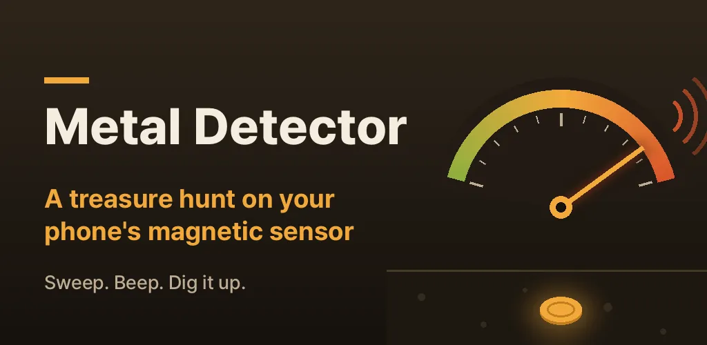
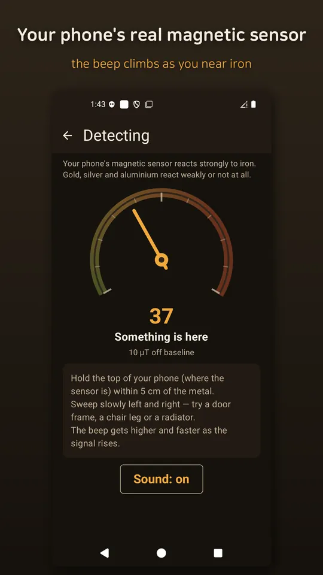
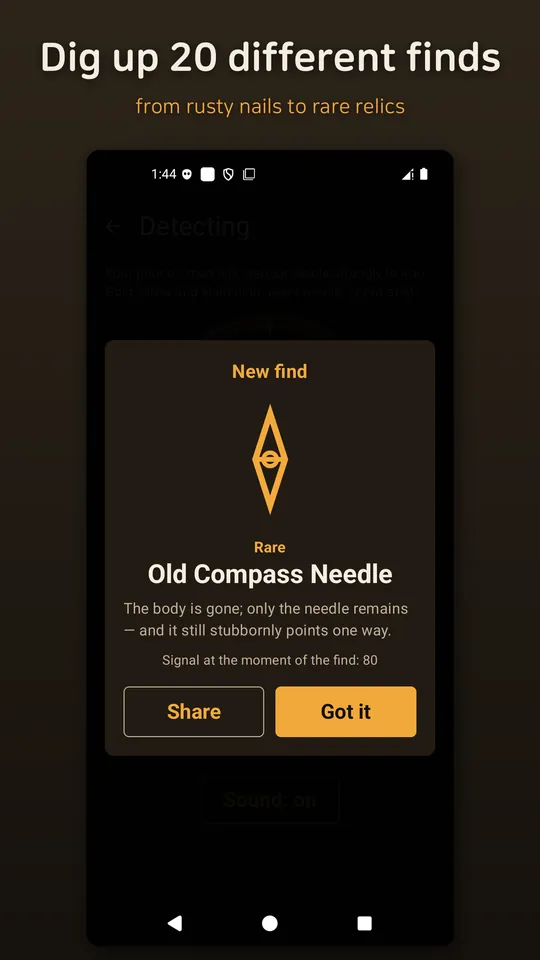
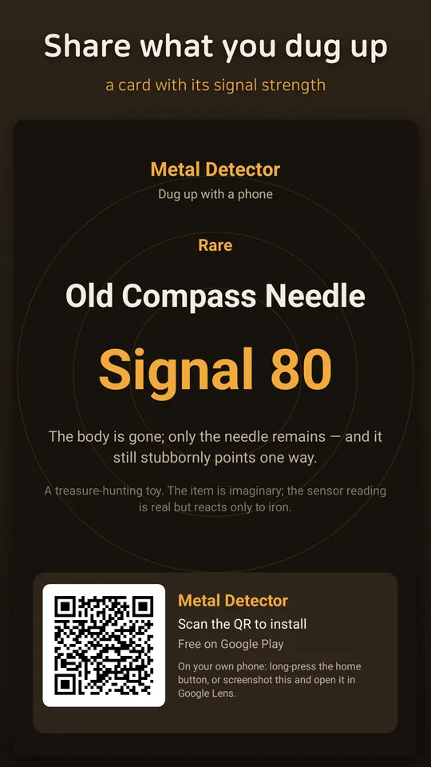
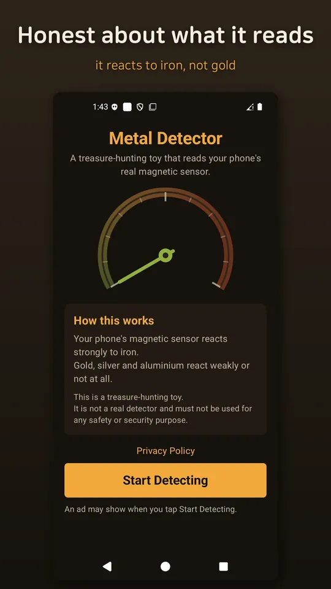

Metal Detector: Treasure Hunt
A metal detector game on your phone's real magnetic sensor. Sweep, beep, dig up.





About this app
Hold your phone close to the ground and sweep slowly.
This metal detector app reads the real magnetic field sensor inside your phone. The gauge is not a random animation — it shows what the sensor measures. Get close to iron and the needle climbs, the beep gets higher and faster, and if the signal holds strong long enough you dig something up.
📡 A gauge driven by the real sensor
It spends the first few seconds learning the baseline around you, then shows how far the field moves away from it, in µT. Try a fridge door, a door frame, a chair leg or a radiator and watch it react.
🔊 Beep and vibration that follow the signal
The stronger the signal, the higher the pitch and the faster the beat, so you can follow it by ear without looking. One tap turns the sound off.
💰 Twenty things to dig up
From rusty nails and bottle caps to old coins, rings and rare relics — 20 finds with different rarities. They are all fictional, and the same find can turn up again.
📤 Share your find
Turn the moment you dug something up into a card with its signal strength and send it to a friend.
🧲 Honest about what it can do
A phone's magnetic sensor reacts strongly only to iron. Gold, silver and aluminium react weakly or not at all. If your phone has no magnetic sensor, the app tells you so instead of faking it.
Good for
- Anyone curious how a metal detector app really reacts
- Anyone looking for a light indoor treasure hunt game
- Anyone who wants to see and hear magnetic field readings
Please note
This app is a treasure-hunting toy. It is not a real detector and must not be used for any safety or security purpose. It works entirely on your device with no account and no server, and sensor readings never leave your phone.
The app contains ads (a bottom banner and a full-screen ad when you tap "Start Detecting").
Android · free with ads · Developer: RealTunaLove · Store listing in 17 languages
Background story: why I built it